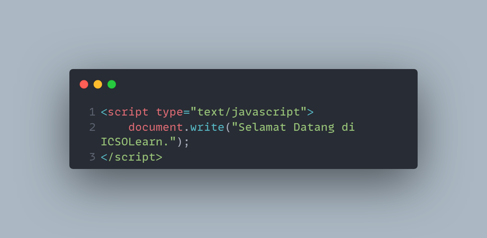

IcsoLearn.
Home
HTML
CSS
Javascript
Apa Itu Javascript?
Resource dari Wikipedia.org
Sejarah Javascript
Resource dari academy.alterra.id
Fungsi Javascript
Resource dari Dewa Web
Struktur Dasar Javascript
